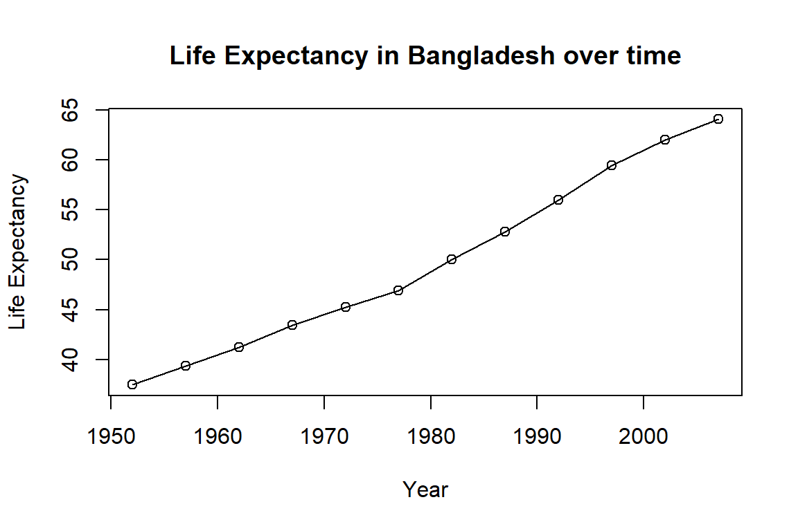
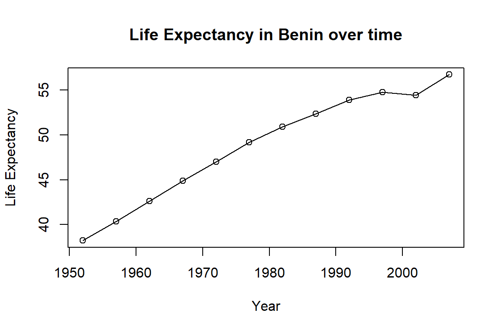
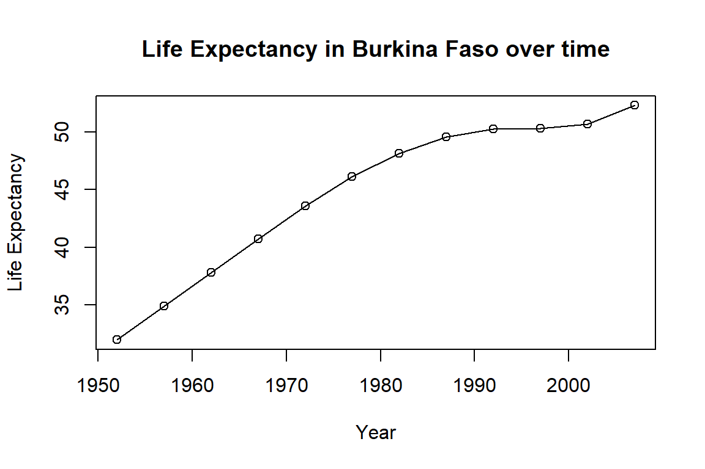

# if
if (condition is true) {
perform action
}
# if ... else
if (condition is true) {
perform action
} else { # that is, if the condition is false,
perform alternative action
}Control Flow in R
Overview
Today we will learn to:
- Make data-dependent choices with
if...elsestatements - Use the
ifelse()function for vectorized conditions - Write and understand
for()loops - Repeat operations using
while()loops
Questions
- How can I make data-dependent choices in R?
- How can I repeat operations in R?
Why Control Flow?
Often when coding, we want to control the flow of our actions:
- Set actions to occur only if a condition is met
- Set an action to occur a particular number of times
- Make decisions based on data values
Control flow is essential for automating complex analyses!
Conditional Statements
The most common approaches for conditional statements:
Simple if Statement
Print a message if a variable has a particular value:
x <- 8
if (x >= 10) {
print("x is greater than or equal to 10")
}
x[1] 8The print statement doesn’t appear because x is not greater than 10.
Adding else
To print a message for numbers less than 10, add else:
x <- 8
if (x >= 10) {
print("x is greater than or equal to 10")
} else {
print("x is less than 10")
}[1] "x is less than 10"Multiple Conditions with else if
Test multiple conditions using else if:
x <- 8
if (x >= 10) {
print("x is greater than or equal to 10")
} else if (x > 5) {
print("x is greater than 5, but less than 10")
} else {
print("x is less than 5")
}[1] "x is greater than 5, but less than 10"Logical Elements in Conditions
Important: R looks for a logical element (TRUE or FALSE) inside if() statements.
x <- 4 == 3
if (x) {
"4 equals 3"
} else {
"4 does not equal 3"
}[1] "4 does not equal 3"Understanding the Condition
The “not equal” message was printed because x is FALSE:
x <- 4 == 3
x[1] FALSEChallenge 1
Use an if() statement to print a suitable message reporting whether there are any records from 2002 in the gapminder dataset.
Now do the same for 2012.
Hint: Think about how to check if any values match a condition!
Challenge 1 Solution
First, let’s load the data:
gapminder <- read.csv(
"https://raw.githubusercontent.com/swcarpentry/r-novice-gapminder/main/episodes/data/gapminder_data.csv"
)Challenge 1 Solution (continued)
Check for records from 2002:
if (any(gapminder$year == 2002)) {
print("Record(s) for the year 2002 found.")
}[1] "Record(s) for the year 2002 found."Challenge 1 Solution (for 2012)
Did you try this for 2012?
if (gapminder$year == 2012) {
print("Record(s) for the year 2012 found.")
}You may have received a warning or error!
Common Mistake with if()
The if() function only accepts singular (length 1) inputs:
Error in `if (gapminder$year == 2012) ...`:
! the condition has length > 1The if() function will only evaluate the condition in the first element of the vector.
To use if(), make sure your input is singular (length 1)!
The ifelse() Function
R’s built-in ifelse() function accepts both singular and vector inputs:
# ifelse function
ifelse(condition is true, perform action, perform alternative action)- First argument: condition(s) to be met
- Second argument: evaluated when
TRUE - Third argument: evaluated when
FALSE
ifelse() Example
y <- -3
ifelse(y < 0, "y is a negative number", "y is either positive or zero")[1] "y is a negative number"Works with vectors too!
values <- c(-3, 5, 0, -1, 8)
ifelse(values < 0, "negative", "non-negative")[1] "negative" "non-negative" "non-negative" "negative" "non-negative"any() and all() Functions
Two useful functions for checking conditions on vectors:
any()- returnsTRUEif at least oneTRUEvalue is foundall()- returnsTRUEonly if all values areTRUE
x <- c(TRUE, FALSE, TRUE)
any(x) # TRUE[1] TRUEall(x) # FALSE[1] FALSEUsing any() with Data
Check if any records exist for a year:
any(gapminder$year == 2002) # TRUE[1] TRUEany(gapminder$year == 2012) # FALSE[1] FALSESimilar to the %in% operator!
Repeating Operations: for Loops
If you want to iterate over a set of values and perform the same operation on each, use a for() loop:
for (iterator in set of values) {
do a thing
}Basic for Loop
Print numbers 1 through 10:
for (i in 1:10) {
print(i)
}[1] 1
[1] 2
[1] 3
[1] 4
[1] 5
[1] 6
[1] 7
[1] 8
[1] 9
[1] 10The 1:10 creates a vector on the fly.
Iterating Over Any Vector
You can iterate over any vector:
colors <- c("red", "green", "blue")
for (color in colors) {
print(color)
}[1] "red"
[1] "green"
[1] "blue"Nested for Loops
Use a for() loop nested within another to iterate over two things:
for (i in 1:3) {
for (j in c('a', 'b', 'c')) {
print(paste(i, j))
}
}[1] "1 a"
[1] "1 b"
[1] "1 c"
[1] "2 a"
[1] "2 b"
[1] "2 c"
[1] "3 a"
[1] "3 b"
[1] "3 c"Understanding Nested Loops
When the first index (i) is set to 1:
- The second index (
j) iterates through its full set - Once
jis complete,iis incremented - Process continues until all indices are used
Storing Loop Results
Write loop output to a new object:
output_vector <- c()
for (i in 1:5) {
for (j in c('a', 'b', 'c', 'd', 'e')) {
temp_output <- paste(i, j)
output_vector <- c(output_vector, temp_output)
}
}
output_vector [1] "1 a" "1 b" "1 c" "1 d" "1 e" "2 a" "2 b" "2 c" "2 d" "2 e" "3 a" "3 b"
[13] "3 c" "3 d" "3 e" "4 a" "4 b" "4 c" "4 d" "4 e" "5 a" "5 b" "5 c" "5 d"
[25] "5 e"Don’t Grow Your Results!
“Growing” results (building the result object incrementally) is computationally inefficient.
The problem:
- Computers are bad at handling this
- Calculations can quickly slow to a crawl
Better approach: Define an empty results object with appropriate dimensions before filling in values.
Better Approach: Pre-allocate
Define your output object before filling values:
output_matrix <- matrix(nrow = 5, ncol = 5)
j_vector <- c('a', 'b', 'c', 'd', 'e')
for (i in 1:5) {
for (j in 1:5) {
temp_j_value <- j_vector[j]
temp_output <- paste(i, temp_j_value)
output_matrix[i, j] <- temp_output
}
}
output_vector2 <- as.vector(output_matrix)
output_vector2 [1] "1 a" "2 a" "3 a" "4 a" "5 a" "1 b" "2 b" "3 b" "4 b" "5 b" "1 c" "2 c"
[13] "3 c" "4 c" "5 c" "1 d" "2 d" "3 d" "4 d" "5 d" "1 e" "2 e" "3 e" "4 e"
[25] "5 e"Challenge 2
Compare the objects output_vector and output_vector2.
- Are they the same?
- If not, why not?
- How would you change the last block of code to make
output_vector2the same asoutput_vector?
Challenge 2 Solution
Check if they’re identical:
all(output_vector == output_vector2)[1] FALSEThey’re not the same! But all elements exist in both:
all(output_vector %in% output_vector2)[1] TRUEChallenge 2 Solution (continued)
The elements are sorted in different order because as.vector() outputs elements by column.
Fix: Transpose the output matrix:
output_vector2 <- as.vector(t(output_matrix))
all(output_vector == output_vector2)[1] TRUEwhile Loops
Sometimes you need to repeat an operation as long as a condition is met:
while (this condition is true) {
do a thing
}R interprets a condition being met as TRUE.
while Loop Example
Generate random numbers until you get one less than 0.1:
set.seed(42) # For reproducibility
z <- 1
while (z > 0.1) {
z <- runif(1)
cat(z, "\n")
}0.914806
0.9370754
0.2861395
0.8304476
0.6417455
0.5190959
0.7365883
0.1346666
0.6569923
0.7050648
0.4577418
0.7191123
0.9346722
0.2554288
0.4622928
0.9400145
0.9782264
0.1174874
0.4749971
0.5603327
0.9040314
0.1387102
0.9888917
0.9466682
0.08243756 while Loop Warning
Be careful with while() loops!
- Ensure your condition will eventually be
FALSE - Otherwise you’ll be stuck in an infinite loop
- The loop never terminates if the condition is always met
Challenge 3
Write a script that loops through the gapminder data by continent and prints out whether the mean life expectancy is smaller or larger than 50 years.
Hint: Use unique() to get continent names, then subset and calculate means.
Challenge 3 Solution
Step 1: Get unique continents:
unique(gapminder$continent)[1] "Asia" "Europe" "Africa" "Americas" "Oceania" Challenge 3 Solution (continued)
Step 2: Loop and calculate:
thresholdValue <- 50
for (iContinent in unique(gapminder$continent)) {
tmp <- mean(gapminder[gapminder$continent == iContinent, "lifeExp"])
if (tmp < thresholdValue) {
cat("Average Life Expectancy in", iContinent, "is less than", thresholdValue, "\n")
} else {
cat("Average Life Expectancy in", iContinent, "is greater than", thresholdValue, "\n")
}
rm(tmp)
}Average Life Expectancy in Asia is greater than 50
Average Life Expectancy in Europe is greater than 50
Average Life Expectancy in Africa is less than 50
Average Life Expectancy in Americas is greater than 50
Average Life Expectancy in Oceania is greater than 50 Challenge 4
Modify the script from Challenge 3 to loop over each country.
This time print out whether the life expectancy is:
- smaller than 50
- between 50 and 70
- greater than 70
Challenge 4 Solution
Add two thresholds and extend the if-else statements:
lowerThreshold <- 50
upperThreshold <- 70
for (iCountry in unique(gapminder$country)) {
tmp <- mean(gapminder[gapminder$country == iCountry, "lifeExp"])
if (tmp < lowerThreshold) {
cat("Average Life Expectancy in", iCountry, "is less than", lowerThreshold, "\n")
} else if (tmp > lowerThreshold && tmp < upperThreshold) {
cat("Average Life Expectancy in", iCountry, "is between", lowerThreshold, "and", upperThreshold, "\n")
} else {
cat("Average Life Expectancy in", iCountry, "is greater than", upperThreshold, "\n")
}
rm(tmp)
}Challenge 5 - Advanced
Write a script that loops over each country in the gapminder dataset:
- Tests whether the country starts with a ‘B’
- Graphs life expectancy against time as a line graph if the mean life expectancy is under 50 years
Hint: Use grep() with value = TRUE to find countries starting with “B”.
Challenge 5 Solution
Find countries starting with “B”:
grep("^B", unique(gapminder$country), value = TRUE) [1] "Bahrain" "Bangladesh" "Belgium"
[4] "Benin" "Bolivia" "Bosnia and Herzegovina"
[7] "Botswana" "Brazil" "Bulgaria"
[10] "Burkina Faso" "Burundi" Challenge 5 Solution (continued)
Complete solution:
thresholdValue <- 50
candidateCountries <- grep("^B", unique(gapminder$country), value = TRUE)
for (iCountry in candidateCountries) {
tmp <- mean(gapminder[gapminder$country == iCountry, "lifeExp"])
if (tmp < thresholdValue) {
cat("Average Life Expectancy in", iCountry, "is less than", thresholdValue,
"- plotting life expectancy graph...\n")
with(subset(gapminder, country == iCountry),
plot(year, lifeExp,
type = "o",
main = paste("Life Expectancy in", iCountry, "over time"),
ylab = "Life Expectancy",
xlab = "Year"
)
)
}
}Average Life Expectancy in Bangladesh is less than 50 - plotting life expectancy graph...
Average Life Expectancy in Benin is less than 50 - plotting life expectancy graph...
Average Life Expectancy in Burkina Faso is less than 50 - plotting life expectancy graph...
Average Life Expectancy in Burundi is less than 50 - plotting life expectancy graph...
When to Use for Loops
The advice of many R users:
- Learn about
for()loops - But avoid them unless order of iteration is important
- i.e., when calculations depend on previous iterations
If order doesn’t matter, consider vectorized alternatives like the purrr package for better computational efficiency.
Key Points
- Use
ifandelseto make choices - Use
forto repeat operations - Use
whilefor condition-based repetition - Pre-allocate results objects for efficiency
- Consider vectorized alternatives when possible
Important Reminders
if()expects a single logical value (length 1)- Use
any()orall()to summarize logical vectors - Use
ifelse()for vectorized conditional operations - Avoid growing results inside loops
- Be careful not to create infinite
whileloops
Resources
- Software Carpentry: r-novice-gapminder
- R Documentation:
?if,?for,?while - RStudio Cheatsheets